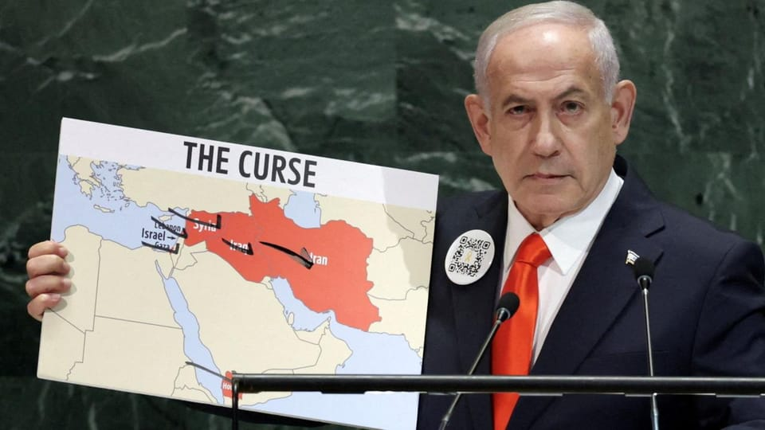

世界苦茶09月27日新闻 | 41条 | 中国与欧盟墨西哥贸易争议加剧

中国与欧盟墨西哥贸易争议加剧 | 俄与白俄继续无人寄骚扰邻国领空 | 美国与以色列在巴勒斯坦问题看法有差异 | 特朗普起诉前FBI局长
每日三个新闻解读
苦茶数据
美元兑人民币：7.14（昨日7.14，前日7.13）
美元兑日元：149.51（昨日149.66，前日148.78）
上证指数：休市（昨日3828，前日3847）
标普500指数：休市（昨日6643，前日6604）
比特币：109789（昨日109461，前日111691）
布伦特原油：70.13（昨日69.52，前日69.14）
中国新闻
• 中美副外长会晤 中国重申台湾问题事关核心利益 ：中国外交部副部长马朝旭星期四会见美国常务副国务卿兰道时，再次强调台湾问题是中国内政，并敦促美国以实际行动维护台海和平稳定。据中国外交部官网消息，马朝旭在当地时间星期四在美国纽约会见兰道。双方就中美关系和共同关心的国际地区问题"坦诚、深入、建设性地"交换了意见。马朝旭强调，台湾问题纯属中国内政，事关中国核心利益，中国敦促美国切实坚持一个中国政策，兑现所作政治承诺，以实际行动维护台海和平稳定。通稿指出，双方同意保持沟通对话，有效管控分歧，拓展互利合作。兰道同日在X平台发文称，他在联合国大会间隙与马朝旭进行了"长时间的会晤"。兰道说，特朗普政府将继续寻求与中国进行建设性对话，以更好地推进美国利益。
•台官员称中国大陆或在2027至2035年发动对美斗争 首步剑指台湾 ：全球地缘政治冲突近年接连而起，台海情势走向备受关注，台湾政府主责两岸事务的大陆委员会官员星期五明确表示，北京在2027到2035年很可能发动全面对美斗争，而第一步就是剑指台湾。自俄乌战争以来，全球地缘政治冲突陆续爆发，外界对于台海情势也更加关注。美国总统特朗普再次执政后，对协防盟友态度转趋消极，近期甚至传出将调整国防战略，重心将更偏向国土安全，而非以应对中俄为优先，也被视为有利中国大陆武力攻台。
•新疆军区政委司令员双双缺席 习近平接见驻疆军官文东升中将陪同 ：中共总书记、中央军委主席习近平本周在新疆首府乌鲁木齐接见驻疆军官，新疆军区政委杨诚中将、司令员柳林中将双双缺席；陪同的是新晋升为中将的文东，他相信已在新疆军区担任要职。习近平星期二抵达乌鲁木齐，出席新疆自治区成立70周年庆祝活动，当天下午接见了驻乌鲁木齐部队上校以上领导干部。中国央视《新闻联播》画面显示，当天接见的全体合影，习近平坐在前排正中，他左手边为中央军委委员、军委联合参谋部参谋长刘振立上将，右边为陆军中将文东。合影中未见新疆军区政委杨诚中将和司令员柳林中将。公开资料显示，杨诚是二十届中央委员，今年底年满61岁，从事军队政治工作多年。杨诚曾长期在原兰州军区服役，历任喀什军分区政治部主任。
•朝鲜外长即将一个月内二度访华 ：朝鲜外长崔善姬星期六起将访问中国四天，这是她一个月内第二次访华。据中国外交部官网消息，中国外交部发言人郭嘉昆星期四宣布，应中共政治局委员、外交部长王毅邀请，崔善姬将于9月27日至30日访问中国。此前，崔善姬9月2日至4日曾陪同朝鲜领导人金正恩访华，出席中国抗战胜利80周年纪念活动。韩国《每日经济》报道称，有分析认为，作为对金正恩访华的答谢，中国国家主席习近平可能会访问平壤，尤其是在习近平下月底将访问韩国并出席在庆州举行的亚太经合组织领导人非正式会议之际。
印太新闻
•台湾外长首次联大期间现身纽约 ：台湾外交部长林佳龙在联合国大会期间现身纽约，中国大陆对此表示强烈不满和坚决反对。路透社引述知情人士报道，林佳龙本周在纽约会晤外交盟友。他星期一在当地出席由美国全球战略主办的招待会。这家咨询公司由美国前国家安全顾问奥布莱恩和前白宫国安会幕僚长格雷创办。报道称，这是台湾外长首次在联大期间访问纽约。林佳龙赴美前在美国保守派媒体Newsmax网站上发文，呼吁国际社会承认台湾。中国大陆外交部发言人郭嘉昆星期四在例行记者会上说，美国允许林佳龙在联大期间"窜访"纽约，"为台独分裂势力谋独挑衅提供哗众取宠的表演舞台"，是对中国内政的粗暴干涉。
**•台加安全合作再升级：**台湾外长林佳龙星期四会见并宴请访台的加拿大国安事务访问团，指台湾与加拿大近年来积极提升国防预算，并在安全议题上深化交流，是印太地区重要民主伙伴。据联合新闻网报道，林佳龙星期四在外交部亲自欢迎并款宴由加拿大前参谋总长劳森、艾尔率领的加拿大国安事务访问团。林佳龙表示，为守护印太局势的稳定，台湾与加拿大是印太地区重要民主伙伴，双方近年来积极提升国防预算，并在安全议题上深化交流。
•韩国瑜访日惹中方警告 ：台湾立法院长韩国瑜率团访问日本，并与日本前首相麻生太郎会面后，中国大陆外交部呼吁日本，不要在台湾问题上挑衅冒险。综合台湾《自由时报》和日本共同社报道，韩国瑜星期四率团访问日本，拜会担任日本执政自民党最高顾问的麻生太郎，以及日华议员恳谈会。麻生太郎与韩国瑜一行会面时，形容台湾是与日本共享价值观的地区。
•日本再攻自动驾驶，丰田智慧城市启动 ：丰田在静冈县裾野市打造的智慧城市"Woven City"启动。大金工业及日清食品等共20个日本国内企业和个人方参与，将在实际居民生活环境中验证自动驾驶等技术。在中美企业领跑自动驾驶领域的背景下，丰田急于通过跨行业的城市级测试，实现源自日本的新一代移动出行社会。丰田已向媒体公开了在市区测试的交通工具和机器人。测试以未来的汽车共享服务为设想，对可通过自动驾驶牵引车辆的设备展开验证。设置了5个上下车地点，用户可通过APP呼叫车辆。此外，还部署了20辆单人座交通工具，供市区内出行使用。
科技新闻
•微软停止向以色列军方提供某些服务 ：微软停止向以色列军方提供某些服务 2025年9月26日在媒体调查报告称以色列军方对巴勒斯坦人的通讯进行大规模监控后，微软周四表示，已禁止以色列军事部门使用微软的部分服务。今年8月，《卫报》以及其他媒体发表了一项联合调查，显示以色列军事机构利用微软的Azure软件，存储约旦河西岸和加沙地带巴勒斯坦人的手机通话录音。在此之后，微软对该事件进行了内部审查。微软总裁史密斯在公司博客中写道，"我们不提供对平民进行大规模监视的技术。"
**•欧盟回应苹果要求废除监管法律，想都别想：**对于苹果要求废除《数字市场法》(DMA)一事，欧盟委员会表示，"绝对无意" 放弃这项法律。此前，苹果向欧盟发出了强有力的挑战，要求废弃DMA，原因是该法律迫使公司推迟在欧盟推出了一些新功能，增加了公司经营难度，损害了用户体验，需要使用一套更符合立法目标的替代方案取而代之。对于苹果此举，欧盟委员会并不感到意外。欧盟委员会发言人托马斯·雷尼耶说："自 DMA 开始实施以来，苹果对其中的每一个细节都提出了异议。 这削弱了该公司宣称要与欧盟委员会充分合作的说法。"雷尼耶在另一份声明中称，欧盟委员会绝对无意放弃这项法律。
•中国工业机器人年安装量超过世界其他地区总和 ：中国工业机器人年安装量超过世界其他地区总和 中国正在以远超其他国家的速度制造和安装工业机器人，美国则远远落后，位居第三，这使中国在全球制造业中已经拥有的主导地位进一步得到巩固。据面向工业机器人制造商的非营利行业组织--国际机器人联合会周四发布的报告，去年中国工厂运行的机器人数量超过200万台。报告还称，中国工厂去年新安装了近30万台机器人，超过世界其他地区的总和。美国工厂安装的机器人为3.4万台。在中国工厂加大机器人运用的同时，其机器人制造能力也在提升。政府运用公共资金和政策指令来鼓励中国企业成为机器人以及半导体和人工智能等其他先进技术领域的领军者。
经济新闻
•台湾宣布暂缓对南非实施晶片出口管制 ：台湾宣布暂缓对南非实施晶片出口管制。台湾外交部星期四发声明说，经济部星期二公告对南非出口集成电路、晶片、记忆体等47项货品，必须先经过经济部核准的预告，并未正式进入程序。鉴于驻南非代表处接获南非政府请求，针对驻处地位进行协商，台湾外交部与经济部协调后，同意暂缓程序。南非政府自去年10月以来，频频要求台湾在当地的代表处搬离行政首都，还把驻处降等、更名。作为反制，台湾两天前宣布对南非出口晶片实施管制，原本预计11月下旬开始实施。发布/2025年9月25日 22:07 台湾宣布暂缓对南非实施晶片出口管制。台湾外交部星期四发声明说，经济部星期二公告对南非出口集成电路，晶片，记忆体等47项货品。
**•特斯拉欧洲销量连跌：**周四出炉的数据显示，尽管欧洲地区全电动汽车需求强劲，但特斯拉在该地区的销量却在持续下滑。欧洲汽车制造商协会当天发布的数据显示，八月份特斯拉电动汽车在欧洲的注册量同比下降约23%，为连续第八个月下滑。上个月，特斯拉电动汽车在欧洲的注册量为 14831辆，低于2024年8月的19136辆。欧洲汽车制造商协会表示，今年前八个月，特斯拉电动汽车在欧洲的注册量下降了 32.6%。与此同时，截至八月，欧洲地区的电动汽车总注册量与2024年同期相比增长了约26%。相比之下，汽油和柴油动力汽车的注册量在此期间下降了20%以上。
•中国31省市区2024年社平工资出炉 涨幅普遍放缓 ：推迟近两个月后，中国31个省级行政区2024年社会平均工资数据截至星期五全部出炉。与往年的高增长相比，今年各地社平工资涨幅普遍放缓，处于1%至2%区间。由前一年城镇非私营单位和私营单位加权计算的"全口径就业人员平均工资"，是反映中国居民收入水平的指标之一，也决定下一年的社保缴费基数上下限。其中，社保缴费基数上限为月社平工资的300%，下限为60%。按照往年惯例，社平工资数据通常会在7月至8月公布。但今年的数据发布有所延迟，9月中旬各地才陆续发布。据《联合早报》统计，在31个省级行政区中，月社平工资过万的有三个地区，分别是上海1万2434元人民币，北京1万1937元。
•中国对墨西哥和美国碧根果发起反倾销调查 ：中国商务部星期四对原产于墨西哥和美国的进口碧根果发起反倾销调查，此举表明北京与美墨两国之间的贸易紧张局势正在升级。中国商务部在官网发布声明，称初步证据表明，来自上述国家的进口碧根果以低于正常值的价格向中国出口销售，存在倾销；同时该产品进入中国市场数量大幅增长，价格呈下降趋势。声明补充道："这对中国国内产业同类产品价格造成削减和抑制，中国国内产业遭受了实质损害。
•中国对墨西哥的贸易调查被视为不屈服于美国压力的 "明确警告 ：分析人士：中国对墨西哥的贸易调查发出 "明确警告"，不要向美国压力低头 墨西哥计划对来自中国和其他国家的商品征收关税--但此举在北京面临阻力 分析人士称，此举意味着北京发出了警告，因为墨西哥计划征收的关税影响到一系列国家，但不包括美国和加拿大，这被广泛视为试图讨好华盛顿。周四，中国商务部对墨西哥和美国的山核桃发起反倾销调查，预计为期一年。同一天，中国商务部还对墨西哥是否对中国产品设置贸易壁垒进行了单独调查。如果得到证实，中国政府可能会寻求双边谈判，或将案件升级到多边争端解决机构，如世界贸易组织。
•特朗普宣布对重型卡车和家具加征关税 ：美国总统特朗普9月25日宣布，将从10月1日起对重型卡车和厨柜等家具征收新的分领域关税。美国商务部在2025年春以后，将启动追加关税纳入视野，并对 进口的实际情况进行了调查。特朗普在自己的社交媒体上透露了相关消息。这些都被认为是基于《贸易扩展法》第232条的加征关税。特朗普表示，从10月1日起将对海外制造的重型卡车加征25%的关税。特朗普列举了美国Mack Trucks，Kenworth和Peterbilt等货运重型卡车专业制造商的名字。
•据彭博社报道，印度要求美国允许购买伊朗石油以抵消俄罗斯的进口量 ：据彭博社9月25日报道，印度要求美国允许购买伊朗石油以抵消俄罗斯的进口，印度官员本周向特朗普政府官员重申了他们的立场，即如果通过购买受制裁的伊朗和委内瑞拉石油来抵消贸易，新德里可能会抑制俄罗斯的石油进口。熟悉会谈情况的消息人士告诉彭博社，印度官员在与美国官员会晤时提出了这一权衡建议，当时各国正在纽约参加第80届联合国大会。
•欧盟拟对中钢征25-50%税 ：德国《商报》引述欧洲联盟高官报道，欧盟计划在未来几周，向中国钢铁等相关产品征收25%至50%关税。据路透社报道，欧盟未立即回应置评请求。欧盟委员会主席冯德莱恩本月较早时称，全球产能过剩影响利润，让欧洲钢铁行业难以在减碳方面注资，因此欧盟建议采用新方案遏制钢铁产品进口，以保护欧洲制造商的权益。
•人民币升值基调，速度放缓 ：市场对中美关税等摩擦的担忧消退，人民币抛售压力相较于此前有所缓解。由于中国经济增长率保持在5％以上，被认为中国允许人民币出现一定程度的升值，未来可能会继续保持温和升值态势。人民币对美元汇率在上周曾一度达到1美元兑7.1019元，出现了马上突破1美元兑7.1元这一关口进一步实现人民币升值的局面。这是2024年11月以后约10个月以来的最高人民币升值、美元贬值水平。本周汇率也主要徘徊在1美元兑7.110～7.114元。今年4月上旬。
• **星巴克9月25日宣布，该公司将在美国和加拿大关闭数百家门店，并裁员900人左右：**根据计划，该公司美国和加拿大门店总数将减少1%，预计到本财年末，该公司在两国的门店总数将接近1.83万家。之后，该公司计划投资开设新店，并对超过1000家门店进行装修改造。
最新关店和裁员计划是星巴克为重振业绩而制定的新战略规划的一部分。截至目前，星巴克销售额已连续6个季度下滑。此次星巴克关店将主要影响那些仅提供外卖服务的门店，因为靠外卖扩张客户群的增长模式已经过时，现在需要提供舒适的堂食服务以留住客户。
俄乌战争
•中国专家助俄武器制造商研发军用无人机 ：中国无人机专家据报协助一家受到西方制裁的俄罗斯国有武器制造商，进行军用无人机技术开发。路透社星期四引述两名欧洲官员称，自去年第二季以来，中国的无人机专家至少六次造访俄罗斯武器制造商IEMZ Kupol。路透社取得的商业发票和银行账单显示，Kupol去年通过俄罗斯国防采购公司TSK Vektor，收到了10多架由四川一电航空生产的单向攻击无人机。TSK Vektor同时受到美国和欧盟制裁。俄罗斯2022年入侵乌克兰以来，无人机发挥了关键作用。路透社此前也报道，Kupol在中国专家的帮助下，研发了一款名为Garpiya-3的新型无人机，Kupol还利用来自中国的零件，包括引擎。
•据报道，欧盟考虑绕过匈牙利对俄罗斯制裁的否决权 ：据美国《政治家》网站9月26日援引一份欧盟委员会内部文件报道，欧盟正在权衡修改其制裁延期程序，以防止匈牙利否决与俄罗斯相关的措施。根据现行规定，制裁和其他外交政策措施需要得到所有27个成员国的一致支持，这使得布达佩斯有权阻止或推迟联合行动。据报道，欧盟委员会建议在更新一揽子制裁措施时从全体一致支持改为特定多数支持。
•德国总理提出使用被冻结的俄罗斯资产向乌克兰提供无息贷款 ：德国总理提出使用被冻结的俄罗斯资产向乌克兰提供无息贷款 2025年9月26日德国总理梅尔茨主张将冻结的俄罗斯在欧洲的资产"用于乌克兰的国防"。梅尔茨在《金融时报》发表的一篇文章中呼吁"新的动力"和"有效的杠杆"，迫使俄罗斯坐到谈判桌前。梅尔茨在文章中提出，在不变更资产所有权的前提下，向乌克兰提供总额近1400亿欧元的无息贷款。他还表示，只有"俄罗斯赔偿乌克兰造成的损失后"，乌克兰才需要偿还这笔贷款。在此之前，俄罗斯资产将继续被冻结。"这项全面援助需要成员国提供财政担保。"梅尔茨解释说。他提议，一旦新的欧盟预算于2028年到位，这些担保就可以被取代。梅尔茨表示。
•在俄罗斯入侵之际，欧盟将推进无人机墙计划 ：随着以俄罗斯冻结资产为基础向乌克兰提供 1，400 亿欧元贷款的势头日益高涨，欧盟已同意推进在其东部防御中心建造无人机墙的计划。欧盟防务专员安德里乌斯-库比留斯在与主要来自中欧，东欧和乌克兰的 10 个成员国的部长举行会议后表示，建立无人机墙以防止来自天空的入侵是当务之急，也是欧盟东翼防御的核心要素。在丹麦，波兰和罗马尼亚接连发生无人机入侵事件，以及俄罗斯战斗机侵犯爱沙尼亚领空，同时俄罗斯继续对乌克兰进行致命轰炸之后，这一问题已被提上议事日程。库比柳斯说，当务之急是建立有效的探测系统，包括雷达和声学传感器。
•据报发现无人机后，丹麦城市奥尔堡上空的空域昨晚再次关闭 ：泽连斯基因涉嫌无人侦察机入侵与匈牙利发生冲突 另外，泽连斯基在声称乌克兰当局 "记录到可能是匈牙利人的无人侦察机侵犯我国领空 "后，与匈牙利当局发生冲突。他说，"初步评估表明，它们可能对乌克兰边境地区的工业潜力进行了侦察"。法新社称，数小时前，乌克兰宣布禁止三名匈牙利军官入境，以针锋相对地回应布达佩斯禁止三名本国官员入境。对此，匈牙利指责乌克兰此举奉行 "反匈牙利政策"。"这些人希望我们支持他们加入欧盟…他们不可能是认真的，"外交部长佩特-齐雅尔托周五在 Facebook 上写道。
•罗马尼亚希望根据欧盟防务计划与乌克兰联合生产无人机 ：据路透社 9 月 26 日报道，罗马尼亚正在考虑与乌克兰合作，根据欧盟资助的一项国防计划生产无人机。该计划是在俄罗斯无人机多次侵犯罗马尼亚领空的情况下提出的。罗马尼亚与乌克兰的边界线长达 650 公里，该国已记录了 20 多起无人机越境或碎片落在其领土上的事件。罗马尼亚政府一位国防人士告诉路透社，布加勒斯特需要 "更多的防空力量"，而 "没有人拥有这些力量"。该官员列举了罗马尼亚国防的 "巨额防空费用"，而这些费用 "只能由北约承担"。据报道，罗马尼亚正在与乌克兰进行谈判，以便在欧盟的 "SAFE "重整军备计划下。
•泽连斯基称匈牙利无人机侵犯乌克兰领空 ：编者按：本篇报道已经更新，加入了匈牙利外交部长彼得-齐雅尔托，乌克兰外交部长安德里-西比哈以及匈牙利国防部和内务部的反应。乌克兰总统沃洛德梅尔-泽连斯基于 9 月 26 日表示，可能属于匈牙利的无人侦察机侵犯了乌克兰边境领空。这是首次报告此类事件。泽连斯基在 X 上发布的一份声明中说，乌克兰部队记录了无人机侵入边境地区的情况，初步评估表明这些无人机 "正在对乌克兰边境地区的工业潜力进行侦察"。"泽连斯基说："我指示对所有可用信息进行核实，并就每次记录的事件提交紧急报告。匈牙利外长彼得-齐雅尔托驳斥了泽连斯基的言论。
•据英国《每日电讯报》报道，在联合国私下会谈中，泽伦斯基要求特朗普提供战斧导弹 ：据英国《每日电讯报》9月26日报道，乌克兰总统沃洛德梅尔-泽连斯基在联合国大会期间举行的闭门会议上请求美国总统唐纳德-特朗普向基辅提供战斧式远程巡航导弹。在整个战争期间，乌克兰多次呼吁华盛顿提供远程打击能力，但美国至今拒绝提供此类武器。据《电讯报》援引多位消息人士的话称，泽连斯基告诉特朗普，先进武器系统有助于向俄罗斯总统普京施压，促使其就和平协议进行谈判。乌克兰领导人随后表示，特朗普对这一请求持开放态度，如果获得批准，乌克兰将有能力打击包括莫斯科在内的俄罗斯境内纵深目标。泽伦斯基在会晤后告诉 Axios，"我们会努力的"，他这样描述特朗普的回应。
•乌克兰无人机袭击俄罗斯克拉斯诺达尔边疆区阿菲普斯基炼油厂 ：乌克兰证实俄罗斯南部最大炼油厂之一遭无人机袭击，誓言继续攻击 乌克兰总参谋部证实，乌克兰无人机于9月26日夜间袭击了俄罗斯克拉斯诺达尔边疆区的阿菲普斯基炼油厂。阿菲普斯基炼油厂距离前线约 200 公里，是向俄军供应柴油和航空煤油的重要后勤枢纽。它占俄罗斯炼油产量的 2.1%，每年加工约 625 万吨石油。
•紧张局势加剧，波兰敦促公民 "立即 "离开白俄罗斯 ：波兰驻明斯克大使馆于 9 月 25 日呼吁波兰公民 "立即离开 "白俄罗斯，因为俄罗斯全面入侵乌克兰导致紧张局势加剧。"使馆在一份声明中说："如果安全局势急剧恶化，边境关闭或出现其他不可预见的情况，撤离可能会变得更加困难甚至不可能。这一警告是在一系列侵犯领空事件以及 "多次任意逮捕波兰公民 "之后，北约与俄罗斯之间的紧张局势不断升级之际发出的。在过去的一个月里，俄罗斯的无人机侵犯了波兰，罗马尼亚，可能还有丹麦的领空。9月19日，爱沙尼亚指控俄罗斯三架米格-31战斗机侵犯其领空，这些战斗机在爱沙尼亚领空停留了12分钟。而就在今天。
世界新闻
•联合国安理会将就核计划进行表决，伊朗恢复制裁迫在眉睫 ：在欧洲国家拒绝了伊朗在最后一刻提出的让联合国武器核查人员有限度地进入其被轰炸的核设施的提议之后，俄罗斯推迟联合国对伊朗大规模制裁的最后一次尝试预计将于周五在联合国安理会失败。俄罗斯将呼吁把重新实施制裁的时间推迟六个月，以便有更多的时间开展外交活动，但欧洲外交官确信，俄罗斯将无法在安理会获得推迟恢复制裁所需的九票。俄罗斯上次就同一问题进行表决时只获得了四票。在纽约联合国举行的最后一次会谈未能从伊朗获得欧洲准备接受的提议后，欧洲决定重新实施制裁。欧洲外交官说，伊朗外长阿巴斯-阿拉格奇提出的最后提议是，只允许国际原子能机构的联合国武器核查人员进入伊朗一处被炸毁的核设施。
•斯洛伐克通过法律只承认两种性别并限制收养 ：斯洛伐克通过法律只承认两种性别并限制收养 斯洛伐克修改了宪法，将只承认男女两种性别写入法律。这项法律修改在议会的激烈投票中获得通过，同时还限制已婚异性夫妇收养子女，并禁止代孕。宪法修正案被定义为体现了 "文化和伦理事务方面的主权"。包括大赦国际在内的批评者警告说，这一修改将使男女同性恋，双性恋和变性者的生活更加艰难，并称这使该国的法律制度更接近匈牙利的非自由主义政府或普京的俄罗斯。议会对修正案的支持出乎观察家们的意料，甚至总理在周四晚些时候也承认修正案可能无法通过。菲佐的政府--一个由民粹主义。
•埃隆-马斯克和安德鲁王子在爱泼斯坦的新档案中被点名 ：埃隆-马斯克和安德鲁王子在爱泼斯坦的新档案中被点名 亿万富翁埃隆-马斯克和安德鲁王子在国会民主党人公布的新档案中被点名，这些档案与已故性罪犯和金融家杰弗里-爱泼斯坦有关。杰弗里-爱泼斯坦遗产公司移交给众议院监督委员会的文件似乎显示，马斯克曾于2014年12月受邀前往爱泼斯坦的岛屿。另外，2000 年 5 月从新泽西州飞往佛罗里达州的一架航班的乘客名单中也有安德鲁王子的名字。马斯克和安德鲁王子已被要求发表评论。安德鲁王子此前一直极力否认有任何不当行为。马斯克曾被引述说，爱泼斯坦曾邀请他去岛上，但他拒绝了。部分记录来自杰弗里-爱泼斯坦遗产公司提供的第三批文件。众议院监督委员会的民主党人说。
• ICE 官员在法院将妇女推倒在地后受到纪律处分 ：移民及海关执法局官员在法院将一名妇女推倒在地后受到纪律处分 国土安全部已让一名移民及海关执法局官员休假，因为他在纽约一家移民法院被拍到将一名妇女推倒在地。国土安全部助理部长特里西娅-麦克劳克林周五在一份声明中说，在国土安全部对该事件进行全面调查期间，他已被解除当前职务。"麦克劳克林补充说："视频中这名警官的行为是不可接受的，有损 ICE 男女工作人员的形象。"我们的 ICE 执法人员必须遵守最高的专业标准。周四，该事件的视频在社交媒体上被广泛分享，视频显示，一名哭泣的妇女在走廊里走近 ICE 官员。他对她说了好几次 "再见"，然后抓住她，把她往后推。
•特朗普称 "不会允许 "以色列在盟友游说下吞并约旦河西岸 ：唐纳德-特朗普表示，他不会允许以色列吞并被占领的约旦河西岸，拒绝了以色列一些极右翼政客的呼吁，他们希望将主权扩展到该地区，从而使巴勒斯坦建国成为不可能。"我不会允许以色列吞并约旦河西岸。不，我不会允许。这不会发生，"特朗普在椭圆形办公室对记者说，并补充道，"已经够多了。现在是时候停止了。特朗普是在本雅明-内塔尼亚胡周五抵达纽约向联合国发表讲话时发表上述言论的。以色列和其他国家广泛猜测内塔尼亚胡打算如何报复本周早些时候英国，澳大利亚，法国，加拿大和葡萄牙承认巴勒斯坦建国。耶路撒冷的官员表示，内塔尼亚胡的任何行动都将首先得到特朗普的批准。分析人士说，可供选择的方案包括完全吞并约旦河西岸。
•加拿大邮政工人举行全国性罢工，导致邮件投递中断 ：加拿大邮政工人举行全国性罢工，导致邮件投递停止 加拿大邮政工人举行全国性罢工，因为联邦政府授权进行大范围的改革，关闭一些邮局并停止某些类型的投递。加拿大邮政工人工会在宣布罢工行动时称，拟议的改革是 "对我们的邮政服务和工人的攻击"。该工会的 5.5 万名会员是在邮政工人的薪资和福利持续存在争议的情况下举行罢工的，这一争议导致了去年年底长达数周的罢工。加拿大邮政表示，罢工期间将停止运营，导致数百万人的邮件和包裹无法投递，并将加剧公司本已严峻的财务困境。联邦政府宣布的全面改革是在邮政服务遭受多年财务损失之后做出的。
•托尼-布莱尔参加管理加沙过渡当局的讨论 ：托尼-布莱尔参与讨论管理加沙过渡当局 据英国广播公司报道，英国前首相托尼-布莱尔爵士参与了有关领导加沙战后过渡当局的讨论。据说该提议得到了白宫的支持，布莱尔将领导一个由联合国和海湾国家支持的管理机构，然后将控制权交还给巴勒斯坦人。布莱尔的办公室表示，他不会支持任何使加沙人民流离失所的提议。托尼爵士曾在 2003 年带领英国参加伊拉克战争，并参与了与美国和其他各方就加沙未来举行的高级别规划会谈。今年 8 月，他参加了白宫与特朗普举行的一次会议，讨论有关该领土的计划，美国中东特使史蒂夫-维特科夫称这次会议 "非常全面"--尽管会议的其他内容几乎没有披露。根据《经济学家》和以色列媒体的报道。
•斯塔默的身份证计划引起了不安，但在欧盟，争论早已尘埃落定 ：在整个欧洲，实体身份证已经存在了几十年，而数字版本要么已经成功推出，要么正在试用。在欧盟 27 个成员国中，除两个国家外，其他国家都在 2021 年推出了机器可读的欧盟标准格式的实体身份证，既可作为公民在本国的身份证件，也可在免护照的申根区内旅行。在 15 个国家，实体卡是强制性的：您必须拥有一张实体卡，但不一定要随身携带。在另外 11 个国家，身份证是自愿性的：其他形式的带照片身份证件也可作为身份证件。
•研究发现，加沙平民受伤情况与战区士兵相似 ：研究发现，加沙平民受伤的类型和程度通常更多见于参与激烈战斗行动的职业军人。发表在《英国医学杂志》上的一项研究发现，与最近在伊拉克和阿富汗冲突中作战的美国士兵相比，某些类型的伤口在加沙平民中更为常见。"加沙受伤平民身上的伤口模式与你在与军事专业人员的激烈战斗中遇到的伤口模式如出一辙。
•美司法部起诉科米： 美国司法部星期四对联邦调查局前局长科米提起刑事指控，这标志着美国总统特朗普对敌对者的报复行动急剧升级。路透社报道，科米面临作虚假陈述和妨碍国会调查的指控，如果罪名成立，可能面临最长五年的监禁。司法部对科米的指控打破数十年来旨在使美国执法部门免受政治压力的惯例。特朗普自2015年首次竞选总统以来，一直威胁要监禁他的敌对者，但对科米的起诉标志着他的政府首次成功争取到一个大陪审团对其中一名敌对者的起诉。